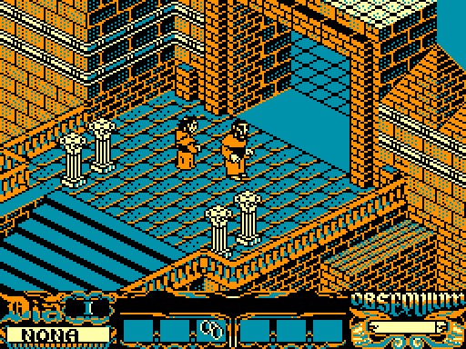

4colours in the original version

The original version
Development began on the CPC 6128. Its graphics mode made it practical to design in four colours and reduce the result for other machines. This is the reference edition: complete map, architectural detail, turquoise, orange, cream, and black.
- 128 KB and disk.
- Full floor plan, including corridors unrelated to the plot.
- Details such as window crosses that disappear from the 64 KB version.
- Opening music and hardware-generated effects.